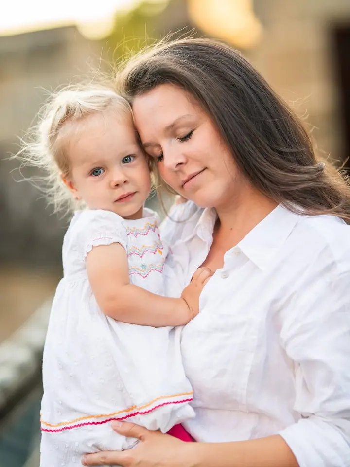
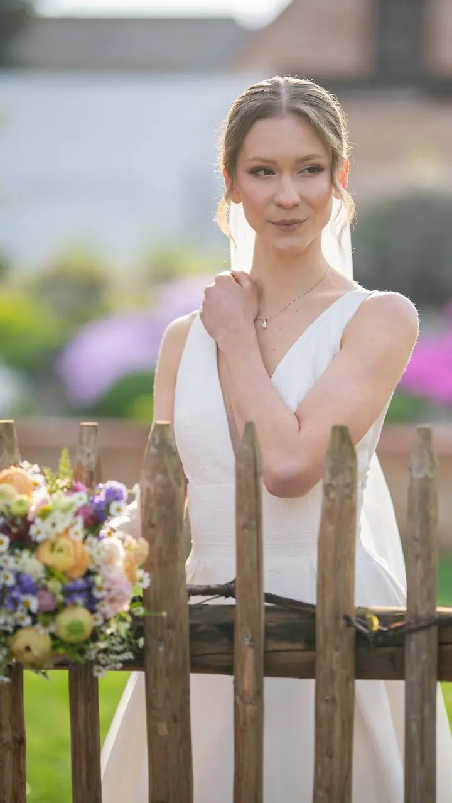
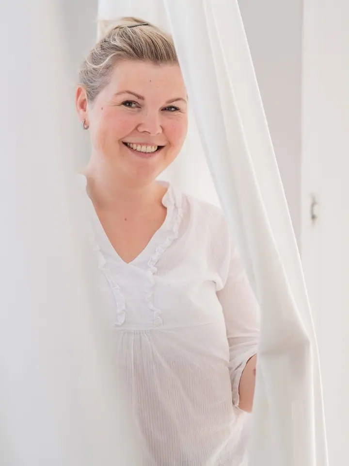

jedna
Rodinné focení
Děti jsou malé jenom jednou, a proto ráda fotím celou rodinu venku i doma. Vybrat si můžete malý, střední nebo velký balíček upravených fotografií.

Rodinná a svatební fotografka · Hrabyně, Hodonín, Opava a Ostrava

Jmenuji se Eva Solaříková a fotím rodiny, páry a svatby mezi Hrabyní a Hodonínem. Děti jsou malé jenom jednou, a tak chci, aby vám po focení zůstaly hlavně emoce, ke kterým se budete rádi vracet.
Více o mně
Co fotím
jedna
Děti jsou malé jenom jednou, a proto ráda fotím celou rodinu venku i doma. Vybrat si můžete malý, střední nebo velký balíček upravených fotografií.
dvě
Celý svatební den nafotím od příprav po první tanec, nejraději s volnou rukou. Skupinové fotky dělám průběžně na různých místech, aby nevypadaly jako ze školního focení.
tři
Klidné focení ve dvou, kde je víc prostoru pro blízkost a úsměvy. K svatebnímu focení patří i předsvatební rande.
Fotím portréty, produkty a akce pro firmy a malé značky. Fotky, které ukážou, kdo za značkou stojí.
Děti jsou malé jenom jednou.
Za objektivem
Jsem fotografka z Hrabyně a fotím také na Hodonínsku. Nejčastěji se potkávám s rodinami, páry a snoubenci, ale ráda fotím i pro značky a na akcích.
Na focení mě nejvíc zajímají lidé a to, co mezi nimi je. Nechci strojené pózy ani skupinky jako ze školního focení. Raději se nechám vést tím, co se právě děje, a vy se můžete věnovat sobě a svým blízkým.
Když mi dáte volnou ruku, vznikají ty nejpřirozenější fotky. Předem mi jen řekněte, kdo je pro vás obzvlášť důležitý, ať je to prababička, kamarádka, nebo pes.
Eva
Pošlete mi zprávu přes formulář nebo e-mail. U svatby mě zajímá, kde bude, kolik budete mít hostů a jaký je celodenní plán.
Probereme, co všechno chcete fotit a kdo je pro vás důležitý. Ke svatbě patří i předsvatební rande focení, kde se poznáme.
Fotím venku, u vás doma nebo v pronajatém ateliéru v okolí. Ráda mám volnou ruku a nechávám věci plynout.
Upravené fotografie dostanete v elektronické podobě přes webovou galerii ke stažení a sdílení. U většiny balíčků přidávám i tištěné fotky.
Portfolio
Otázky
Deset hodin focení stojí 17 000 Kč a cestovné je 10 Kč/km. Dostanete 200 až 300 fotografií v elektronické podobě, 30 tištěných fotek 13×19 v dárkové krabičce a předsvatební rande focení. Kratší focení se dá domluvit také.
Malý balíček s 10 fotografiemi za 2 500 Kč, střední s 30 fotografiemi a tiskem 10×15 za 3 500 Kč a velký s 50 fotografiemi za 5 500 Kč. Další fotky si můžete dokoupit.
Ano. Můžeme si pronajmout některé ze studií v okolí, cena focení se pak navýší o cenu pronájmu.
Ráda, jen ne všechny najednou ve stejné řadě. Skupinky fotím během celého dne na různých místech, aby nevypadaly jako ze školního focení.
Napište pár vět o tom, co si představujete. eva@evasolarikova.cz